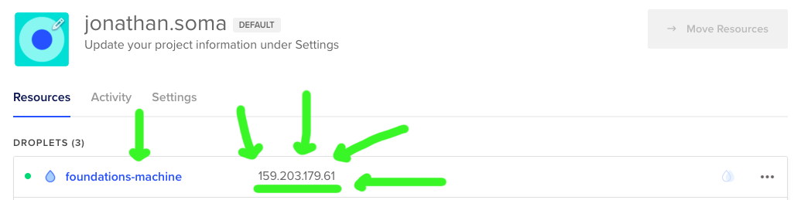
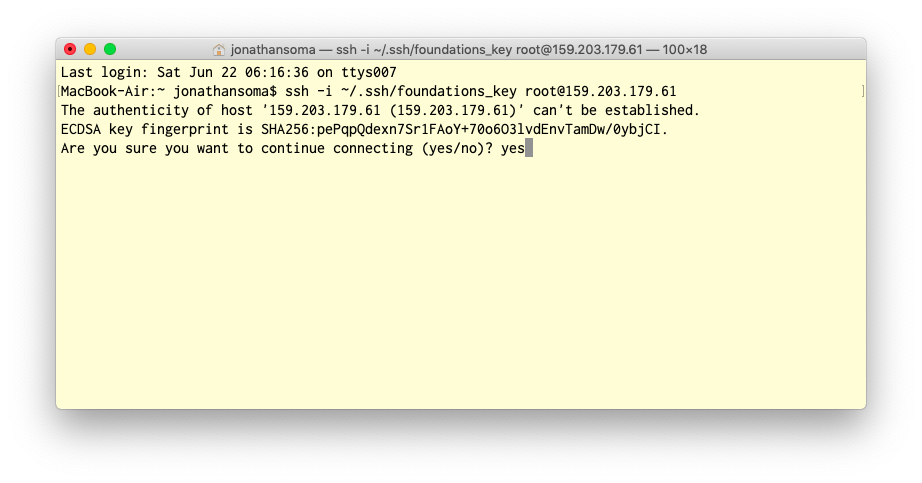

Setting up a Digital Ocean server with Python 3 and BeautifulSoup
Step One: Logging in
When you created your server, you gave it a public key, probably foundations_key.pub. To log onto the server, you need to match that with your private key, the foundations_key file.
Note: If you lose your private key, you lose access to your server! That’s why we (maybe) stored it in a secret location (the
.sshdirectory).
First thing you’ll need is to make sure you know where your keys are.
Second thing you’ll need is to find the IP Address of your server. Mine is 204.48.28.110.

Windows
If you’re using Windows, you should be able to use ssh, just like OS X people. But instead of ~/.ssh/foundations_key, you’ll use C:\foundations_key instead.
OS X
On OS X, you will use the following command to connect to the server. It uses your key to connect to the server’s IP address using the username root. Make sure the path to your key is correct, and make sure you put in your IP address.
Note: The key is the name of the file on your computer, NOT!!! the name you gave the key when creating the server
ssh -i ~/.ssh/foundations_key root@YOUR_IP
For example, your command might be ssh -i ~/.ssh/foundations_key root@159.203.179.61.
Is it not working? Make sure you put in your server’s IP address and did not just copy mine. Make sure you know where your key is.
When it asks you if you’re sure you want to connect, say Yes.

Step Two: Customizing your prompt
The worst thing is when you forget whether you’re on your server or not. The code below will make it very obvious when you are. Cut and paste it into your terminal to run it
Make sure you’re connected to your server when you run it! You can tell because it will say root@foundations-machine to the left of your prompt.
echo "export PS1=\"\[\033[40m\]\[\033[47m\]server\[\033[0m\] \[\033[31m\]\[\e]0;\u@\h: \w\a\]${debian_chroot:+($debian_chroot)}\u@\h\[\033[0m\]:\w\$ \"" > ~/.bash_profile
source ~/.bash_profile
Step Three: Welcome to your server!
We should probably update the software on there. First you’ll update the software it knows about, then you’ll actually perform an upgrade.
apt is a package manager for Lunux (it’s what Homebrew wants to be).
apt update
apt -y upgrade
The -y means “don’t ask me if I am sure I want to upgrade, because yes I do.”
After you run that, you’ll install mailutils by using apt. It will ask you some questions - mostly you just hit “OK” (tab, then enter or spacebar). The only thing you want to change is the kind of server you want - Local only is a good option. If you miss that, though, it’s no big deal. Install using the following command.
apt install -y mailutils
When you need to click
OK, push the right arrow to select it.
We won’t be sending mail, but it’s useful to give us notifications when things break (we’ll talk about it later!.
Step Three: Install Python, update pip, and install some packages
We install Python 3 and pip using apt. Note we’re using -y here again.
apt install -y python3 python3-pip
To make sure Python will work, you’ll need to disconnect from your server. Otherwise you’ll get a weird error about main not being found.
exit
Then reconnect with the same IP address from before. You can just push up to get the last command.
ssh -i ~/.ssh/foundations_key root@YOUR_IP
Now that we’re back on our server, we’ll use pip3 to install some packages. Notice we’re using pip3 and not pip! On our server, pip is for Python 2 and pip3 is for Python 3.
pip3 install --upgrade pip
pip3 install pandas requests bs4 jupyter selenium
Step Four: Test it out
Type ipython to open up the interactive Python prompt.
ipython
Paste in the following code, hit enter a few times, and see if it displays the headlines from the BBC.
import requests
from bs4 import BeautifulSoup
response = requests.get('https://www.bbc.com/')
doc = BeautifulSoup(response.text)
titles = doc.find_all(class_='media__link')
for title in titles:
print(title.text.strip())
Exit ipython by typing exit().
Get crazy
Now you’re good to go! We can move on to sending files back and forth from your server or scheduling repeating tasks